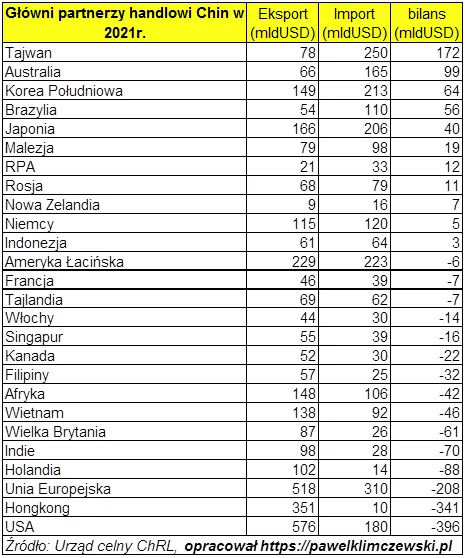

Inflacja - prawdziwy wirus eksportowany z Chin.
Od początku "pandemii" pisałem o ważnych incydentach na Pacyfiku. Tam bije gospodarcze serce świata.
Mały Tajwan jest miejscem produkcji elektroniki najnowszych technologii, której Chiny jeszcze nie mają i muszą płacić czystą gotówką. Ta wyspa to przyczółek zachodniego biznesu na progu Wielkiego Smoka.
Nie jest prawdą, że wszystko kupujemy w Chinach. Top technologie kontrolują Amerykanie i produkują to na Tajwanie. Jest to zarazem sprytny sposób zabezpieczenia tej wyspy przed chińską agresją. W przypadku ataku kluczowe fabryki zostaną zniszczone przez właścicieli a Chiny pozbawione dostaw komponentów do swych eksportowych hitów. Poza Tajwanem kluczowe chipy robi się tylko w USA. Tak wygląda światowa polityka, wygodny dla obu stron balans. Jednak czas biegnie i należy się spodziewać, że Chiny zdobędą potrzebne technologie, to będzie początek końca obecnego świata. Tymczasem Tajwan czerpie ogromne zyski z eksportu do Chin. Na przełomie roku mogliśmy oglądać chińskich taikonautów skręcających na orbicie chińską stację kosmiczną. To znak czasów.
Na drugim końcu tabeli bilansu handlowego Chin mamy USA z blisko 400 mld USD deficytu wymiany handlowej na rzecz Chin. Unia Europejska też "dopłaca" podobną kwotę do chińskiego rozwoju.

Poza technologią i złotem najmocniejszym atutem USA są lotniskowce. Widzieliśmy to wiele razy, gdy do brzegów Syrii, czy Libii zbliża się taki potwór, który staję się osłoną lokalnej rebelii, w której miejscowy sułtan kończy w rowie melioracyjnym. Taka była dotąd cena za niechęć używania amerykańskiej waluty. Tajemnica siły lotniskowców polega na ich bezkarności. Mają taką osłonę militarną, że mimo wielkich rozmiarów żadna broń nie jest w stanie do nich dotrzeć. Przełomem są pociski hipersoniczne, tzn. latające tak szybko (nawet do 11 000 km/h), że nikt ich nie jest w stanie złapać lub zestrzelić. Rosja i Chiny intensywnie pracują nad takim sprzętem i otwarcie pokazują próby tej broni. Wbrew pozorom utrzymanie amerykańskich lotniskowców z dala od ich wybrzeży przyniesie pokój tym państwom, ale znacznie pogorszy naszą sytuację, nie tylko militarną.
Zachód żyjący z dodruku pieniędzy podczas "pandemii" rozpędził się ponad miarę serwując nam paskudną zarazę inflacji. To jest prawdziwy wirus eksportowany z Chin: Inflacja, czyli już 10% i ciągle rosnący ukryty podatek na rzecz coraz głodniejszego Lewiatana, bestii muszącej budować coraz to nowe lotniskowce. Polska wyprzedziła Arabię Saudyjską w wydatkach na zakup amerykańskiej broni. Pit-2 tu nie pomoże.
Paweł Klimczewski